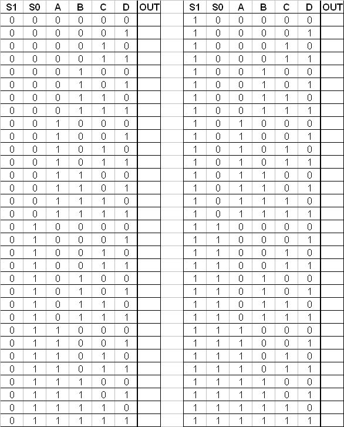
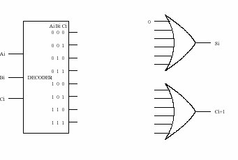
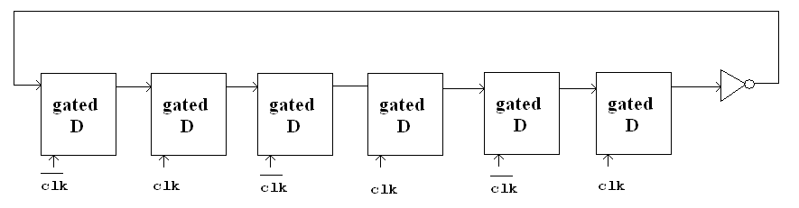
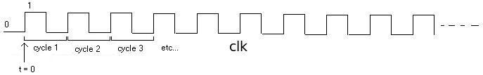

Department
of Electrical and Computer Engineering
The
University of Texas at Austin
EE 306, Fall 2014
Instructions:
Problem Set 3
Due: October 6th, at the beginning of class
Aater Suleman, Instructor
TAs: Owais Khan, Cagri Eryilmaz and Chirag Sakhuja
You are encouraged to work on the problem set in groups and turn in one problem
set for the entire group. Remember to put all your names on the solution sheet.
Also, remember to put the name of the TA and the time for the discussion
section you would like the problem set turned back to you. Show your work.

Recall that the adder was built with individual "slices" that produced
a sum bit and carryout bit based on the two operand bits A and B and
the carryin bit. We called such an element a full-adder. Suppose we
have a 3-to-8 decoder and two six-input OR gates, as shown in Figure 1
below. Can we connect them so that we have a full-adder? If so, please
do. (Hint: If an input to an OR gate is not needed, we can
simply put an input 0 on it and it will have no effect on anything. For
example, see the figure below.)

Figure 1
We wish to design a controller for an elevator such that if you push a button for a desired floor, the controller will output the floor number that the elevator should go to. However, to deter lazy people from going up or down one floor, if you push the button for the next floor (up or down), the elevator will stay on its current floor. If you push the button for the same floor that you're currently on, the controller will output the current floor number. There are four floors in the building.
Your job: construct a complete truth table for the elevator controller. It is not necessary to draw the logic here; the truth table is sufficient.
Hint: What information does the controller need in order to output the floor to go to?Hint: How many input bits will that require.
Hint: How many output bits will the controller have to supply.
We want to make a state machine for the scoreboard of the Texas vs. Oklahoma Football game. The following information is required to determine the state of the game:
1. Score: 0 to 99 points for each team
2. Down: 1, 2, 3, or 4
3. Yards to gain: 0 to 99
4. Quarter: 1, 2, 3, 4
5. Yardline: any number from Home 0 to Home 49, Visitor 0 to Visitor 49, 50
6. Possesion: Home, Visitor
7. Time remaining: any number from 0:00 to 15:00, where m:s (minutes, seconds)
(a) What is the minimum number of bits that we need to use to store the state required?
(b) Suppose we make a separate logic circuit for each of the seven elements on the scoreboard, how many bits would it then take to store the state of the scoreboard?
(c) Why might the method of part b be a better way to specify the state than the method of part a?
The IEEE campus society office sells sodas for 35 cents. Suppose they install a soda controller that only takes the following three inputs: nickel, dime, and quarter. After you put in each coin, you push a pushbutton to register the coin. If at least 35 cents has been put in the controller, it will output a soda and proper change (if applicable). Draw a finite state machine that describes the behavior of the soda controller. Each state will represent how much money has been put in (Hint: There will be seven of those states). Once enough money has been put in it, the controller will go to a final state where the person will receive a soda and proper change (Hint: There are five such final states). From the final state, the next coin that is put in will start the process again, contributing to the next purchase.
Shown below is a partially completed state diagram of a finite state machine that takes an input string of H (heads) ant T (tails) and produces an output of 1 every time the string HTHH occurs.

Figure 2
- Complete the state diagram of the finite state machine that will do this for any input sequence of any length
- If this state machine is implemented with a sequential logic circuit how many state variables will be needed?
A logic circuit consisting of 6 gated D latches and 1 inverter is shown below:

Figure 3

Figure 4
Question: What is the state after 50 cyles. How many cycles does it take for a specific state to show up again?
Using Figure 3.21 on page 69 in the book, the diagram of the, 22-by-3-bit memory.
- To read from the fourth
memory location, what must the values of
A[1:0]andWEbe? - To change the number of
locations in the memory from 4 to 60, how many address lines would be
needed? What would the addressability of the memory be after this change
was made?
- Suppose the width (in
bits) of the program counter is the minimum number of bits needed to
address all 60 locations in our memory from part (b). How many additional
memory locations could be added to this memory without having to alter
the width of the program counter?
The figure below is a diagram of a 22-by-16-bit memory, similar in implementation to the memory of Figure 3.21 in the textbook. Note that in this figure, every memory cell represents 4 bits of storage instead of 1 bit of storage. This can be accomplished by using 4 Gated-D Latches for each memory cell instead of using a single Gated-D Latch. The hex digit inside each memory cell represents what that cell is storing prior to this problem.

Figure 5: 22-by-16 bit memory
- What is the address space
of this memory?
- What is the
addressability of this memory?
- What is the total size
in bytes of this memory?
- This memory is accessed
during four consecutive clock cycles. The following table lists the
values of some important variables just before the end of the cycle
for each access. Each row in the table corresponds to a memory access.
The read/write column indicates the type of access: whether the access is
reading memory or writing to memory. Complete the missing entries in the
table.
|
WE |
A[1:0] |
Di[15:0] |
D[15:0] |
Read/Write |
|
|
|
|
||
|
|
|
|
||
|
|
|
|
||
|
|
|
|
Suppose a 32-bit instruction has the following format:
|
|
|
|
|
|
If there are 255 opcodes and 120 registers, and every register is available
as a source or destination for every opcode,
- What is the minimum
number of bits required to represent the
OPCODE? - What is the minimum
number of bits required to represent the Destination Register (
DR)? - What is the maximum
number of
UNUSEDbits in the instruction encoding?